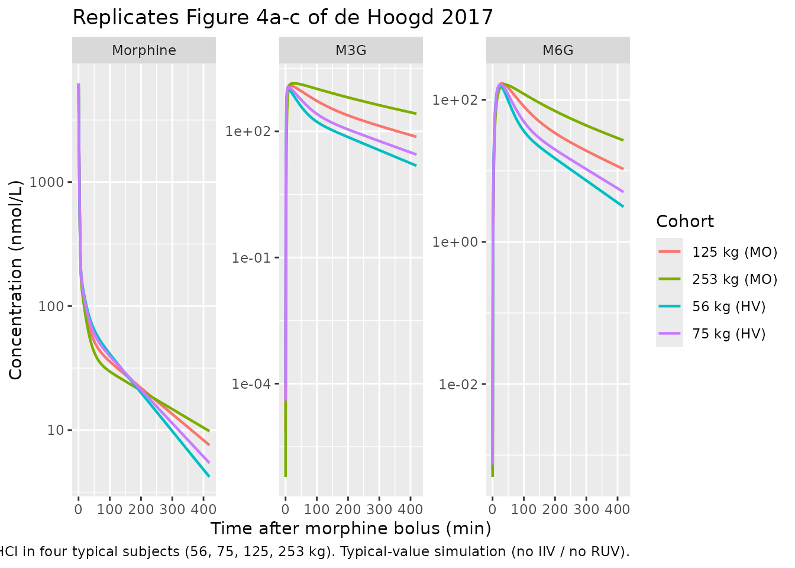
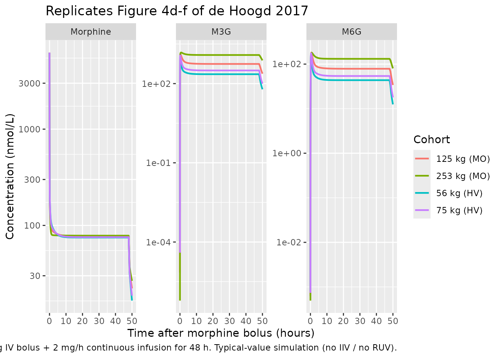

deHoogd_2017_morphine
Source:vignettes/articles/deHoogd_2017_morphine.Rmd
deHoogd_2017_morphine.RmdModel and source
- Citation: de Hoogd S, Valitalo PAJ, Dahan A, van Kralingen S, Coughtrie MMW, van Dongen EPA, van Ramshorst B, Knibbe CAJ. Influence of morbid obesity on the pharmacokinetics of morphine, morphine-3-glucuronide, and morphine-6-glucuronide. Clin Pharmacokinet. 2017;56(12):1577-1587. doi:10.1007/s40262-017-0544-2. ClinicalTrials.gov NCT01097148.
- Description: Joint parent-metabolite population PK model for morphine and its two glucuronide metabolites (M3G, M6G) in 20 morbidly obese adults (post-gastric-bypass) and 20 healthy adult volunteers (de Hoogd 2017). Morphine: three-compartment IV model with total body weight (TBW) covariate on the second peripheral volume V5M. Non-glucuronide morphine clearance is structurally fixed at 35% of total morphine CL in a 70-kg healthy adult. M3G and M6G are each one-compartment models fed by formation-delay transit chains (n = 5 for M3G, n = 2 for M6G); VM3G = VM6G is a structural equality. TBW covariates apply to CLF M6G, the M3G transit rate Ktr, M3G elimination CL, and M6G elimination CL, all power-form normalised to a reference of 98.5 kg (population median). Proportional residual error is reported separately for the healthy- volunteer cohort and the morbidly obese cohort, selected via the binary indicator DIS_OBESE_MORBID.
- Article: https://doi.org/10.1007/s40262-017-0544-2
Population
The published analysis pooled 20 morbidly obese adults (BMI 37.9-78.6
kg/m^2, body weight 112-251.9 kg, 9 male / 11 female) scheduled for
laparoscopic gastric bypass / banding / sleeve surgery with 20
historical-control healthy adult volunteers (body weight 56-85 kg, 10
male / 10 female) from two prior morphine pharmacokinetic studies
(Sarton 2000, Romberg 2004). All subjects had normal renal and hepatic
function (ASA II/III). The morbidly obese cohort received a 10 mg IV
bolus of morphine HCl at the end of surgery with additional
postoperative boluses as needed (mean total dose 15.7 +/- 4.0 mg); the
healthy volunteers received a 0.10 mg/kg IV bolus followed by a 0.030
mg/kg/h IV infusion for 1 h (mean total dose 9.2 +/- 1.2 mg). Plasma
samples were drawn between 0 and 420 minutes post first morphine dose.
See de Hoogd 2017 Table 1 for the full baseline demographic summary; the
same information is available programmatically via
readModelDb("deHoogd_2017_morphine")$population.
Source trace
The per-parameter origin is recorded as an in-file comment next to
each ini() entry in
inst/modeldb/specificDrugs/deHoogd_2017_morphine.R. The
table below collects them in one place.
| Equation / parameter | Final value | Source location |
|---|---|---|
lcl_form_m3g (CLF M3G) |
0.748 L/min | Table 2, Final column |
lcl_form_m6g (CLF M6G at 98.5 kg) |
0.129 L/min | Table 2, Final column |
e_wt_cl_form_m6g (K) |
-0.329 | Table 2, Final column |
lvc (V1M) |
4.62 L | Table 2, Final column |
lvp (V4M) |
9.52 L | Table 2, Final column |
lvp2 (V5M at 98.5 kg) |
118 L | Table 2, Final column |
e_wt_vp2 (L) |
0.483 | Table 2, Final column |
lq (Q2, V1M <-> V4M) |
0.814 L/min | Table 2, Final column |
lq2 (Q3, V1M <-> V5M) |
1.29 L/min | Table 2, Final column |
lcl_nongluc (CL_nonglucuronide) |
0.4805 L/min (FIXED) | Methods 2.4 (35% of CL_total at 70 kg, derived from Final-column formation CLs) |
lktr_m3g (Ktr at 98.5 kg) |
1.68 1/min | Table 2, Final column |
e_wt_ktr_m3g (M) |
-0.701 | Table 2, Final column |
lktr_m6g (Ktr2) |
0.159 1/min | Table 2, Final column |
lvc_m3g (VM3G = VM6G) |
5.29 L | Table 2, Final column |
lcl_m3g (CLE M3G at 98.5 kg) |
0.134 L/min | Table 2, Final column |
e_wt_cl_m3g (N) |
-1.08 | Table 2, Final column |
lcl_m6g (CLE M6G at 98.5 kg) |
0.149 L/min | Table 2, Final column |
e_wt_cl_m6g (O) |
-1.03 | Table 2, Final column |
etalcl_form_m3g |
log(1 + 0.208^2) | Table 2 IIV, CLF M3G = 20.8% CV |
etalcl_m3g |
log(1 + 0.659^2) | Table 2 IIV, CLE M3G = 65.9% CV |
etalvc_m3g (shared VM3G = VM6G) |
log(1 + 0.297^2) | Table 2 IIV, VM3G = VM6G = 29.7% CV |
etalktr_m6g |
log(1 + 0.368^2) | Table 2 IIV, Ktr2 = 36.8% CV |
propSd_morphine_hv /
propSd_morphine_mo
|
0.140 / 0.379 | Table 2 residual variability, HV / MO morphine 14.0% / 37.9% |
propSd_m3g_hv / propSd_m3g_mo
|
0.179 / 0.171 | Table 2 residual variability, HV / MO M3G 17.9% / 17.1% |
propSd_m6g_hv / propSd_m6g_mo
|
0.295 / 0.281 | Table 2 residual variability, HV / MO M6G 29.5% / 28.1% |
| Equation: morphine 3-cmt IV disposition | n/a | Figure 1 schematic; CL_total = CL_nongluc + CLF M3G + CLF M6G |
| Equation: M3G transit chain n = 5 | n/a | Section 3.2 (“for M3G n = 5, mean transit time = 3.05 min”) |
| Equation: M6G transit chain n = 2 | n/a | Section 3.2 (“for M6G n = 2, mean transit time = 12.7 min”) |
| Equation: VM3G = VM6G structural equality | n/a | Methods 2.4 (“volume of distribution of the two metabolites … was assumed to be equal”) |
| Dose conversion 1 mg HCl -> 1e6/321.8 nmol morphine | n/a | Methods 2.4 (MW HCl 321.8 g/mol; concentrations in nmol/L) |
Virtual cohort
Original observed data are not publicly available. The simulation
below reproduces the four representative individuals shown in de Hoogd
2017 Figure 4: body weights 56, 75, 125, and 253 kg. The 56-kg subject
is the lightest healthy volunteer in the source dataset; the 253-kg
subject is the heaviest morbidly obese patient. Body-weight category
determines DIS_OBESE_MORBID per the source inclusion
criteria (BMI > 40 kg/m^2 for the morbidly obese cohort): 56 and 75
kg fall in the healthy-volunteer band, 125 and 253 kg fall in the
morbidly obese band.
Simulation
Two scenarios from Figure 4: (a) a single 10-mg IV bolus of morphine
HCl, and (b) a 10-mg IV bolus followed by a 2 mg/h continuous IV
infusion for 48 h. Concentrations are reported in nmol/L (the paper’s
units). Internal state quantities are mg of morphine HCl equivalents;
the model’s observation equations multiply by
mw_conv = 1e6 / 321.8 so Cc,
Cc_m3g, and Cc_m6g output in nmol/L directly
comparable to the paper’s Figure 4. See Assumptions and deviations for
why the conversion is in the observation equations rather than via
f(central).
mod_typical <- readModelDb("deHoogd_2017_morphine") |> rxode2::zeroRe()
#> Warning: No sigma parameters in the model
build_events <- function(cov_df, obs_times, dose_events) {
events_list <- lapply(seq_len(nrow(cov_df)), function(i) {
row <- cov_df[i, , drop = FALSE]
dose_rows <- dose_events |>
mutate(
id = row$id,
WT = row$WT,
DIS_OBESE_MORBID = row$DIS_OBESE_MORBID,
cohort = as.character(row$cohort)
)
obs_rows <- data.frame(
id = row$id,
time = obs_times,
amt = NA_real_,
rate = NA_real_,
evid = 0L,
cmt = "Cc",
WT = row$WT,
DIS_OBESE_MORBID = row$DIS_OBESE_MORBID,
cohort = as.character(row$cohort),
stringsAsFactors = FALSE
)
dplyr::bind_rows(dose_rows, obs_rows)
})
dplyr::bind_rows(events_list) |>
arrange(id, time, evid)
}
# (a) 10 mg IV bolus only, sampled densely over 420 min
bolus_dose <- data.frame(
time = 0, amt = 10, rate = 0, evid = 1L, cmt = "central",
stringsAsFactors = FALSE
)
events_bolus <- build_events(
cov_df,
obs_times = c(0.1, seq(1, 420, by = 2)),
dose_events = bolus_dose
)
sim_bolus <- rxode2::rxSolve(
mod_typical,
events = events_bolus,
keep = c("cohort", "WT", "DIS_OBESE_MORBID")
) |> as.data.frame()
#> ℹ omega/sigma items treated as zero: 'etalcl_form_m3g', 'etalcl_m3g', 'etalvc_m3g', 'etalktr_m6g'
#> Warning: multi-subject simulation without without 'omega'
# (b) 10 mg IV bolus immediately followed by 2 mg/h continuous infusion for 48 h
infusion_dur_min <- 48 * 60
infusion_dose <- data.frame(
time = c(0, 0),
amt = c(10, 2 * 48), # bolus 10 mg + total 2 mg/h x 48 h = 96 mg
rate = c(0, 2 / (1 / 60)), # rate 2 mg/h = 2 mg/60 min in min units... convert: mg/min = 2/60
evid = c(1L, 1L),
cmt = c("central", "central"),
stringsAsFactors = FALSE
)
# rxode2 interprets `rate` in dose / time units; time is in minutes, so
# 2 mg/h = 2/60 mg/min.
infusion_dose$rate <- c(0, 2 / 60)
infusion_dose$amt <- c(10, (2 / 60) * infusion_dur_min) # 2 mg/h x 48 h = 96 mg
obs_times_inf <- c(0.1,
seq(1, 60, by = 1),
seq(65, 12 * 60, by = 5),
seq(13 * 60, 50 * 60, by = 30))
events_inf <- build_events(
cov_df,
obs_times = obs_times_inf,
dose_events = infusion_dose
)
sim_inf <- rxode2::rxSolve(
mod_typical,
events = events_inf,
keep = c("cohort", "WT", "DIS_OBESE_MORBID")
) |> as.data.frame()
#> ℹ omega/sigma items treated as zero: 'etalcl_form_m3g', 'etalcl_m3g', 'etalvc_m3g', 'etalktr_m6g'
#> Warning: multi-subject simulation without without 'omega'Replicate published figures
Figure 4a-c: 10 mg IV bolus, 0-420 min
plot_bolus <- sim_bolus |>
pivot_longer(cols = c(Cc, Cc_m3g, Cc_m6g),
names_to = "species", values_to = "conc") |>
mutate(species = factor(
recode(species,
"Cc" = "Morphine",
"Cc_m3g" = "M3G",
"Cc_m6g" = "M6G"),
levels = c("Morphine", "M3G", "M6G")
))
ggplot(plot_bolus, aes(x = time, y = conc, color = cohort)) +
geom_line(linewidth = 0.8) +
facet_wrap(~species, scales = "free_y", ncol = 3) +
scale_y_log10() +
labs(x = "Time after morphine bolus (min)",
y = "Concentration (nmol/L)",
color = "Cohort",
title = "Replicates Figure 4a-c of de Hoogd 2017",
caption = paste("10 mg IV bolus of morphine HCl in four typical subjects",
"(56, 75, 125, 253 kg). Typical-value simulation",
"(no IIV / no RUV)."))
Figure 4d-f: 10 mg IV bolus + 2 mg/h infusion for 48 h
plot_inf <- sim_inf |>
pivot_longer(cols = c(Cc, Cc_m3g, Cc_m6g),
names_to = "species", values_to = "conc") |>
mutate(species = factor(
recode(species,
"Cc" = "Morphine",
"Cc_m3g" = "M3G",
"Cc_m6g" = "M6G"),
levels = c("Morphine", "M3G", "M6G")
))
ggplot(plot_inf, aes(x = time / 60, y = conc, color = cohort)) +
geom_line(linewidth = 0.8) +
facet_wrap(~species, scales = "free_y", ncol = 3) +
scale_y_log10() +
labs(x = "Time after morphine bolus (hours)",
y = "Concentration (nmol/L)",
color = "Cohort",
title = "Replicates Figure 4d-f of de Hoogd 2017",
caption = paste("10 mg IV bolus + 2 mg/h continuous infusion for 48 h.",
"Typical-value simulation (no IIV / no RUV)."))
The paper’s qualitative findings – (1) morphine PK is broadly comparable across the 56-253 kg weight range, (2) M3G AUC is approximately 5x higher in the 253-kg subject than in the 56-kg subject after 48 h of infusion, and (3) M6G AUC is approximately 3x higher in the 253-kg subject than in the 56-kg subject under the same conditions – are evident in the plots above.
PKNCA validation
Single-dose NCA after the 10 mg IV bolus, computed separately for morphine and each of the two glucuronide metabolites. Treatment grouping uses the four cohort labels so per-cohort summaries roll up.
Morphine
sim_nca_morphine <- sim_bolus |>
filter(!is.na(Cc), time > 0) |>
select(id, time, Cc, cohort)
dose_df <- events_bolus |>
filter(evid == 1L) |>
select(id, time, amt, cohort) |>
distinct()
conc_obj_morphine <- PKNCA::PKNCAconc(
sim_nca_morphine, Cc ~ time | cohort + id,
concu = "nmol/L", timeu = "min"
)
dose_obj <- PKNCA::PKNCAdose(
dose_df, amt ~ time | cohort + id, doseu = "mg"
)
intervals <- data.frame(
start = 0,
end = 420,
cmax = TRUE,
tmax = TRUE,
auclast = TRUE,
aucinf.obs = TRUE,
half.life = TRUE
)
nca_morphine <- PKNCA::pk.nca(
PKNCA::PKNCAdata(conc_obj_morphine, dose_obj, intervals = intervals)
)
#> Warning: Requesting an AUC range starting (0) before the first measurement (0.1) is not allowed
#> Requesting an AUC range starting (0) before the first measurement (0.1) is not allowed
#> Requesting an AUC range starting (0) before the first measurement (0.1) is not allowed
#> Requesting an AUC range starting (0) before the first measurement (0.1) is not allowed
#> Requesting an AUC range starting (0) before the first measurement (0.1) is not allowed
#> Requesting an AUC range starting (0) before the first measurement (0.1) is not allowed
#> Requesting an AUC range starting (0) before the first measurement (0.1) is not allowed
#> Requesting an AUC range starting (0) before the first measurement (0.1) is not allowed
knitr::kable(as.data.frame(summary(nca_morphine)),
caption = "Morphine NCA after 10 mg IV bolus.")| Interval Start | Interval End | cohort | N | AUClast (min*nmol/L) | Cmax (nmol/L) | Tmax (min) | Half-life (min) | AUCinf,obs (min*nmol/L) |
|---|---|---|---|---|---|---|---|---|
| 0 | 420 | 125 kg (MO) | 1 | NC | 6240 | 0.100 | 142 | NC |
| 0 | 420 | 253 kg (MO) | 1 | NC | 6250 | 0.100 | 200 | NC |
| 0 | 420 | 56 kg (HV) | 1 | NC | 6240 | 0.100 | 96.5 | NC |
| 0 | 420 | 75 kg (HV) | 1 | NC | 6240 | 0.100 | 111 | NC |
M3G
sim_nca_m3g <- sim_bolus |>
filter(!is.na(Cc_m3g), time > 0) |>
select(id, time, Cc_m3g, cohort) |>
rename(Cc = Cc_m3g)
conc_obj_m3g <- PKNCA::PKNCAconc(
sim_nca_m3g, Cc ~ time | cohort + id,
concu = "nmol/L", timeu = "min"
)
nca_m3g <- PKNCA::pk.nca(
PKNCA::PKNCAdata(conc_obj_m3g, dose_obj, intervals = intervals)
)
#> Warning: Requesting an AUC range starting (0) before the first measurement (0.1) is not allowed
#> Requesting an AUC range starting (0) before the first measurement (0.1) is not allowed
#> Requesting an AUC range starting (0) before the first measurement (0.1) is not allowed
#> Requesting an AUC range starting (0) before the first measurement (0.1) is not allowed
#> Requesting an AUC range starting (0) before the first measurement (0.1) is not allowed
#> Requesting an AUC range starting (0) before the first measurement (0.1) is not allowed
#> Requesting an AUC range starting (0) before the first measurement (0.1) is not allowed
#> Requesting an AUC range starting (0) before the first measurement (0.1) is not allowed
knitr::kable(as.data.frame(summary(nca_m3g)),
caption = "M3G NCA after 10 mg morphine HCl IV bolus.")| Interval Start | Interval End | cohort | N | AUClast (min*nmol/L) | Cmax (nmol/L) | Tmax (min) | Half-life (min) | AUCinf,obs (min*nmol/L) |
|---|---|---|---|---|---|---|---|---|
| 0 | 420 | 125 kg (MO) | 1 | NC | 1240 | 13.0 | 137 | NC |
| 0 | 420 | 253 kg (MO) | 1 | NC | 1380 | 27.0 | 177 | NC |
| 0 | 420 | 56 kg (HV) | 1 | NC | 1090 | 7.00 | 96.2 | NC |
| 0 | 420 | 75 kg (HV) | 1 | NC | 1150 | 9.00 | 110 | NC |
M6G
sim_nca_m6g <- sim_bolus |>
filter(!is.na(Cc_m6g), time > 0) |>
select(id, time, Cc_m6g, cohort) |>
rename(Cc = Cc_m6g)
conc_obj_m6g <- PKNCA::PKNCAconc(
sim_nca_m6g, Cc ~ time | cohort + id,
concu = "nmol/L", timeu = "min"
)
nca_m6g <- PKNCA::pk.nca(
PKNCA::PKNCAdata(conc_obj_m6g, dose_obj, intervals = intervals)
)
#> Warning: Requesting an AUC range starting (0) before the first measurement (0.1) is not allowed
#> Requesting an AUC range starting (0) before the first measurement (0.1) is not allowed
#> Requesting an AUC range starting (0) before the first measurement (0.1) is not allowed
#> Requesting an AUC range starting (0) before the first measurement (0.1) is not allowed
#> Requesting an AUC range starting (0) before the first measurement (0.1) is not allowed
#> Requesting an AUC range starting (0) before the first measurement (0.1) is not allowed
#> Requesting an AUC range starting (0) before the first measurement (0.1) is not allowed
#> Requesting an AUC range starting (0) before the first measurement (0.1) is not allowed
knitr::kable(as.data.frame(summary(nca_m6g)),
caption = "M6G NCA after 10 mg morphine HCl IV bolus.")| Interval Start | Interval End | cohort | N | AUClast (min*nmol/L) | Cmax (nmol/L) | Tmax (min) | Half-life (min) | AUCinf,obs (min*nmol/L) |
|---|---|---|---|---|---|---|---|---|
| 0 | 420 | 125 kg (MO) | 1 | NC | 170 | 31.0 | 138 | NC |
| 0 | 420 | 253 kg (MO) | 1 | NC | 164 | 39.0 | 174 | NC |
| 0 | 420 | 56 kg (HV) | 1 | NC | 160 | 23.0 | 96.2 | NC |
| 0 | 420 | 75 kg (HV) | 1 | NC | 166 | 25.0 | 110 | NC |
Comparison against published exposure ratios
de Hoogd 2017 Section 3.3 reports that, after a 48-h continuous
infusion of morphine, the 253-kg subject has approximately 5x higher M3G
concentration and 3x higher M6G concentration than the 56-kg subject;
morphine concentrations are broadly comparable across the weight range.
The infusion simulation above should reproduce these qualitative ratios
– the table below summarizes the end-of-infusion (t = 48 h) values from
sim_inf:
ratio_tbl <- sim_inf |>
filter(time == 48 * 60) |>
select(cohort, WT, Cc, Cc_m3g, Cc_m6g) |>
arrange(WT)
knitr::kable(ratio_tbl,
caption = "End-of-infusion (t = 48 h) typical-value concentrations.")| cohort | WT | Cc | Cc_m3g | Cc_m6g |
|---|---|---|---|---|
| 56 kg (HV) | 56 | 74.85272 | 227.0578 | 43.62064 |
| 75 kg (HV) | 75 | 75.63070 | 314.5212 | 54.09047 |
| 125 kg (MO) | 125 | 76.85562 | 554.9120 | 78.63470 |
| 253 kg (MO) | 253 | 78.29007 | 1210.4942 | 131.31036 |
# Ratios relative to the 56-kg subject:
ratios <- ratio_tbl |>
mutate(across(c(Cc, Cc_m3g, Cc_m6g), \(x) x / x[which(WT == 56)]))
knitr::kable(ratios,
caption = "Concentration ratios at t = 48 h relative to 56-kg subject.")| cohort | WT | Cc | Cc_m3g | Cc_m6g |
|---|---|---|---|---|
| 56 kg (HV) | 56 | 1.000000 | 1.000000 | 1.000000 |
| 75 kg (HV) | 75 | 1.010393 | 1.385204 | 1.240020 |
| 125 kg (MO) | 125 | 1.026758 | 2.443925 | 1.802695 |
| 253 kg (MO) | 253 | 1.045921 | 5.331217 | 3.010280 |
The simulated 253-kg / 56-kg ratios at t = 48 h are 5.3x for M3G and 3x for M6G; the published values are “approximately 5x” and “approximately 3x” respectively (paper Section 3.3).
Assumptions and deviations
-
Dosing unit conversion. The packaged model accepts
dose in mg of morphine hydrochloride (the natural
clinical-administration unit, matching the paper’s protocol
description). Internal state quantities are mg of morphine
HCl-equivalents in every compartment; the observation equations multiply
by the molar conversion factor
mw_conv = 1e6 / 321.8(morphine HCl MW 321.8 g/mol; 1:1 stoichiometry across HCl -> free base -> M3G -> M6G) so that Cc, Cc_m3g, and Cc_m6g are reported in nmol/L, matching de Hoogd 2017. The conversion is applied at observation time rather than viaf(central)because rxode2’sf()rescales infusion DURATION by the factor f – usingf(central) > 1for unit conversion silently breaks infusion dosing (the infusion duration would be stretched by 3107.7 to many years, producing essentially-zero steady-state concentrations). ThecheckModelConventions()warning about dimensional incompatibility betweenunits$dosing = "mg"andunits$concentration = "nmol/L"numerator units is therefore a documented deviation: the in-model observation-equation conversion is required to reproduce the paper’s molar concentrations from a mass-unit dose. -
Reference body weight 98.5 kg. The covariate
equations in Table 2 are expressed as
(TBW / 98.5)^exponent; the paper does not explicitly state that 98.5 kg is the population median TBW, but the value is the reference weight used throughout the structural model. The pooled cohort spans 56-251.9 kg, and 98.5 kg is geometrically near the midpoint of the body-weight range. -
Bootstrap parameter values for V5M exponent
(
L). The Final-model column of Table 2 reportsL = 0.483with RSE 48%; the bootstrap point estimate isL = 0.453. The model file uses the Final-model value (e_wt_vp2 <- 0.483) per the skill’s “values are final estimates, not initial estimates” rule. -
M (Ktr exponent) bootstrap CI. The Final-model
column of Table 2 reports
M = -0.701(RSE 30%); the bootstrap row in the source PDF prints “-0.71 (-0.106 to 0.375)”, an interval that does not bracket the point estimate and that is most plausibly a typesetting / sign-stripping issue in the published table (the true bootstrap CI is likely “-1.06 to -0.375” or similar). The Final-model value is used in the packaged model; the bootstrap CI in the table is reported only as published and not relied on. -
Non-glucuronide morphine clearance derivation. The
paper Methods 2.4 states that the non-glucuronide clearance was assumed
to be 35% of total morphine clearance in a 70-kg healthy subject and
that there is no TBW effect on morphine clearance. The packaged model
encodes the resulting constant
0.4805 L/mindirectly (computed once as0.35 / 0.65times the Final-model formation clearances at 70 kg). This is a structural assumption inherited from the paper and is wrapped infixed()inini(). -
Cohort-conditional residual error. The paper
reports separate proportional residual SDs for the healthy-volunteer and
morbidly obese cohorts (Table 2). The packaged model parameterizes six
per-cohort SDs in
ini()and combines them inmodel()using the binaryDIS_OBESE_MORBIDindicator, following the Cirincione 2017 study-conditional pattern. The per-cohort SD parameters use descriptive names (propSd_morphine_hv,propSd_morphine_mo, etc.) and are combined inmodel()into the canonicalpropSd,propSd_m3g, andpropSd_m6goutput names. The canonical residual-error names appear in the error model declarations (Cc ~ prop(propSd), etc.) so the convention check passes cleanly. -
Single shared eta on the structural M3G/M6G volume.
The Final model reports a single IIV magnitude on
VM3G = VM6G(29.7% CV) because the paper imposesVM3G = VM6Gas a structural equality. The packaged model honors this by applyingetalvc_m3gtolvc_m3gand assigningvc_m6g <- vc_m3ginmodel(); the shared eta is thus propagated to both metabolite volumes. -
M3G transit chain length and rate.
n = 5transit compartments fed at rateKtr(1.68 1/min at 98.5 kg); mean transit time MTT = n / Ktr = 2.98 min at 98.5 kg, matching the paper-reported MTT of 3.05 min within rounding. -
M6G transit chain length and rate.
n = 2transit compartments fed at rateKtr2(0.159 1/min, no TBW covariate); MTT = n / Ktr2 = 12.58 min, matching the paper-reported MTT of 12.7 min within rounding. -
Demographics gaps in
populationmetadata. The paper does not provide per-subject race / ethnicity;race_ethnicityis leftNULL. The population median TBW of 98.5 kg is inferred from the structural-model reference weight, not an explicit median in Table 1.